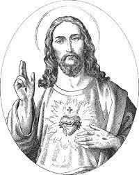

Takk, Herre, for din Kirke. Lær oss å elske den. Skjenk den Åndens gaver, liv, styrke og sannhet. Gi oss lengsel etter ditt rikes komme. Vi ber deg for vår hellige Far, paven, for vår biskop og våre prester, for hele vår menighet og for dem som står i dens tjeneste. Velsign alle som er her og alle som ikke er her. La dem merke ditt nærvær i sitt liv. Tal til oss i dag, vekk vår hunger etter livets Ord og livets Brød. Herre, deg vil vi takke og lovprise i all evighet. Amen.
Kristus, brød fra himmelen, du som er kommet for å gi verden liv: kom også til meg med livets uforgjengelige gave. Rens meg fra min synd, så jeg tillitsfull og med ren samvittighet kan tilbe deg. Helliggjør meg, vær mitt vern og bli alltid hos meg. La meg en gang komme dit hvor du er og se deg ansikt til ansikt. Amen.
Jeg tror, Herre, og bekjenner at Du i sannhet er Kristus, den levende Guds Sønn, som har kommet for å frelse syndere, som jeg er den fremste blant.
Videre tror jeg at dette er Ditt allerreneste legeme og at dett er selv Ditt dyrebare blod. Derfor ber jeg Deg: Forbarm Deg over meg og tilgi meg alle mine synder, frivillige eller ufrivillige, i ord eller gjerning, bevisst eller ubevisst, og verdige meg å ta del i Dine allerreneste mysterier, ikke til fordømmelse, men til syndenes forlatelse og evig liv. Amen.
Far i himmelen, Du er så glad i det Du har skapt at Du gir Jesus til oss hver eneste dag så vi kan ha evig liv. Jeg tror med hele mitt hjerte at Jesus er Livets Brød som jeg får i hver hellige Messe.
Jesus, jeg takker deg. Lær meg å elske deg mer og lengte etter deg daglig, slik at du kan bo i mitt hjerte og min familie.
Himmelske Far, måtte Kristi Legeme og Blod som jeg får i dag. Gi meg styrke til å følge Deg, glede til å være trofast mot Deg og å bli mer som Deg i hva jeg sier og hva jeg gjør. Amen.
Min Jesus, jeg tror fullt og fast at du er til stede i det aller helligste Sakramentet. Jeg elsker deg over alt, og min sjel lengter etter deg. siden jeg nå ikke kan motta deg i Sakramentet, kom åndelig til mitt hjerte. Jeg forener meg helt med deg, tillat aldri at jeg skilles fra deg. Amen.
Kom, gudsfrykts Ånd!
Lære meg å frykte bare dette ene: å skilles fra Gud.
Kom, fromhets Ånd, kom barnekårets Ånd!
La mitt hjerte få erfare at Gud i sannhet er Far.
Kom, kunnskaps Ånd! Lær meg å se Gud i alt han har skapt.
Kom, styrkes Ånd! Gi mot og utholdenhet i mitt kristne liv.
Kom, råds Ånd! Hjelp meg å bruke de evner Gud har gitt meg.
Kom, forstands Ånd! Gjør Guds ord levende i meg.
Kom, visdoms Ånd! La meg få erfare Herrens godhet. Amen
Min Gud, jeg tror på deg, Fader, Sønn og Hellig Ånd. Dit ord er sannhet, din lov er frihet. Din kjærlighet er frelse for mennesket og hele skapningen. Jeg tror på Kirken som gir livets ord og som er Kristi Legeme der vi er lemmene.
Min Gud, jeg håper deg, Fader, Sønn og Hellig Ånd. Du har skapt oss i ditt bilde og din likhet. Du har betrodd oss hele skapningen. Du forlater oss ikke under fristelser og prøvelser. Du er god og full av miskunn mot synderen som omvender seg.
Min Gud, jeg elsker deg, Fader, Sønn og Hellig Ånd, kilde til all kjærlighet. Jeg elsker deg av hele mitt hjerte og mer enn alt annet, fordi du er min kjærligste Far og ingen er mer verdig til min kjærlighet enn du.
Hellige Gud, allmektige Far, i din nåde gir du meg denne nye dag. Jeg takker for din gave. I ærefrykt tilber jeg deg og takker deg fordi jeg har lært deg å kjenne, for at du har skapt meg, holder meg i din varetekt og gir meg alt jeg trenger til liv og frelse. Derfor vier jeg denne dagen til deg, hver tanke, hvert ønske, alt jeg gjør i ord og gjerning, alt hva jeg må tåle av motgang og bære av sykdom og smerte, så det kan tjene din hellige Kirke og bli til min egen frelse.
Herre Jesus Kristus, vis meg i dag hva som er rett og urett, godt og ondt, så jeg kan følge deg i trygghet.
Hellige Ånd, opplys og led meg ved din kraft, så jeg i alle ting handler etter din vilje.
Hellige Treenighet, vær hos meg med din nåde, så jeg alltid i min samvittighet. Gi meg stryke i fristelse, hold meg borte fra synd, hjelp meg å overvinne lunkenhet og treghet. Gi meg en levende tro på ditt nærvær, et urokkelig håp om din evige lønn og en tillitsfull kjærlighet til deg, så jeg kan leve denne dagen til din ære.
Himmelske Far, vi takker deg for denne nye dag. La oss tjene deg fra time til time. Led oss og våk over alt i vårt liv: over vår tunge, så vi ikke taler falske eller hissige or, over våre handlinger, så vi ikke gjør noe skammelige eller sårende, over vårt sinn, så vi ikke tanker onde eller bitre tanker, over vårt hjerte, så vi i alt søker å glede deg.
Herre Jesus Kristus, du som er Kirkens hode, du er også hode for vår menighet. Fyll oss med kjærlighet til hverandre. Gi oss å si det rett ord i det rette øyeblikk og rekk en hjelpende hånd der det trengtes.
Beskytt de svake, opplys de tvilende, styrk de mismodige, led de vaklende, vekk de sovende, vis deg for de søkende, varm de lukne.
Hjelp oss å gi hver og én det de mest trenger, så vi kan bære hverandres byrder og slik oppfylle din lov.
Du som lever og råder i evighet. Amen.
Jesus Kristus,
menneskeslektens milde Frelser,
se i nåde til oss som kneler for ditt alter.
Dine er vi, dine vil vi være.
For å forenes mer inderlig med deg,
vier vi oss i dag av hele vår sjel til ditt helliges hjerte.
Mange mennesker har aldri kjent deg,
mange har foraktet dine bud og gått fra deg.
Jesus Kristus, miskunn deg over dem
og dra dem alle til ditt hellige hjerte.
Herre, vær konge ikke bare over de troende
som aldri har gått fra deg,
men også over de fortapte sønner og døtre som har forlatt deg.
La dem få vende tilbake til faderhuset,
så de ikke går til grunne i elendighet.
Vær deres konge som har fart vill i vranglære eller uenighet.
Før dem tilbake til sannhetens og troens trygge havn,
så det kan bli én hjord og én hyrde.
Herre, gi din Kirke enhet og velferd;
gi alle folk fred og trygge kår.
La et enstemmig rop lyde fra alle verdenshjørner:
Lovet være det guddommelige hjerte
som har gitt oss frelsen.
Priset og æret være du, Kristus, i all evighet.
Amen.

Jesus, Maria og Josef,
til deg, du hellige familie i Nasaret,
vender vi oss i dag med hengivelse og tillit;
i deg kjenner vi skjønnheten i nattverdens kjærlighet;
vi anbefaler vår familie til deg,
slik at nådens underverk kan bli fornyet i den.
Du hellige familie i Nasaret,
tiltrekkende lærested for Det hellige evangelium:
lær oss å etterligne dine dyder med åndelig visdom,
gi oss å gjenkjenne Guds virke i dagliglivet.
Du hellige familie i Nasaret,
trofast vern om frelsesmysteriet:
gjenoppliv i oss sansen for stillhet,
gjør våre familier til bønnemiddager
og form dem om til små huskirker,
forny i oss ønsket om hellighet,
støtt all edel innsats i arbeid, utdanning,
samtale, gjensidig forståelse og tilgivelse.
Du hellige familie i Nasaret,
vekk bevissthet i vårt samfunn
for familiens hellige og ukrenkelige karakter -
uvurderlig og uerstattelig.
La hver familie være et gjestfritt hjem;
med vennlighet og fred for barn og eldre,
for dem som er syke og alene,
for dem som er fattige og trengende.
Jesus, Maria og Josef,
Vi ber tillitsfullt og hengir oss med glede til deg.
Amen.
Hellige Josef, vi kommer til deg
for å overgi vårt liv i din varetekt.
Du kan lære oss å gå frem i nåde og visdom,
til glede for Gud og mennesker.
Du er et tårn til vern mot fienden
og alle som truer vårt liv.
Du sørger for våre åndelige og materielle behov,
og lærer oss å gjøre alt til Guds ære og for sjelens frelse.
Hellige Josef, lær oss å betrakte Jesus og Maria
og betro dem våre liv.
Slik som dem ønsker vi å elske og adlyde deg som en far,
å leve i fred, tillit og tiltro til Guds forsyn.
I din skole ønsker vi som Herrens disipler
å tilegne oss hellig lydighet, ydmykhet og mildhet,
hjertets klarhet, barndoms ånd
og kyskheten til dem som har gitt alt,
den diskre iver som redskap for din fred
og gleden i å være Guds barn.
Slik ønsker vi dag for dag
å forberede oss til å oppleve den fulle glans
av de under Jesus gjør for dem
som vil la seg forvandle i den skole Han selv har gått.
Hellige Josef,
vi betror deg våre hjerter, sjeler og hele vårt liv,
akkurat som Jesus og hans hellige mor gjorde
fra begynnelsen av sitt jordiske liv.
Vi ønsker å gå ved din side på jorden
for å komme til himmelens land
og bli en del av familien
– vår himmelske fars familie –
der vi alle vil bli velsignet.
Amen.
O hellige Barbara,
du inspirerer Kirken med ditt korte jordiske liv.
Kristus velger deg til sin brud
og du ofrer ditt liv til ham ved martyrdøden.
Ditt mot i prøvelser er vårt forbilde,
din styrke viser seg gjennom overgivelse og gavmildhet.
Ved din forbønn ber vi
for alle som blir forfulgt for sin tro,
som faller i motgang, og ikke klarer å reise seg.
Gi dem din tros gave, håpets glede og kjærlighetens omsorg,
og vær deres følgesvenn på veien til Faderen.
O hellige Barbara, skytshelgen for vår menighet.
Vi forener våre bønner med dine
i takksigelse til vår Herre Jesus Kristus.
Lær oss under alle omstendigheter
alltid å ha Treenigheten, Fader, Sønn og Hellig Ånd i vårt hjerte
slik som du, da du ble fengslet i ditt eget hjem,
hadde tårnets tre vinduer som tegn.
Lær oss å bli et lys for samfunnet vi lever i
som du gjorde i ditt fangenskap.
Vis oss hvordan vi kan omfavne urettferdige lidelser
som vår deltagelse i å omvende verden,
spesielt for dem lever i mørke.
O, hellige Barbara,
vær med våre barn og unge
øk deres kjærlighet for Gud og la den spire i vår menighet
og bli til en vakker og duftende blomsterhage
som tiltrekker andre mennesker til kirken.
Vi forener til slutt vår lovprisning og tilbedelse
med ditt uskyldige barnlige hjerte
i takknemlighet til vår himmelske Far
for menighetens liv, fellesskap og enhet.
Amen.